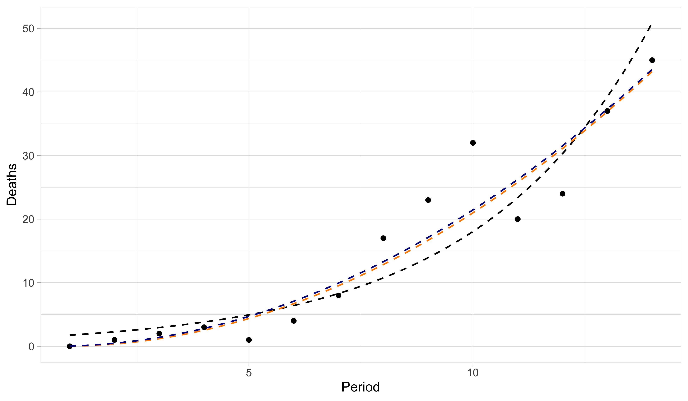
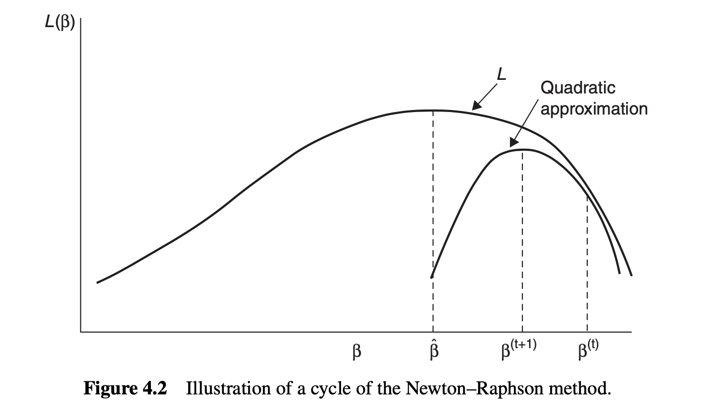
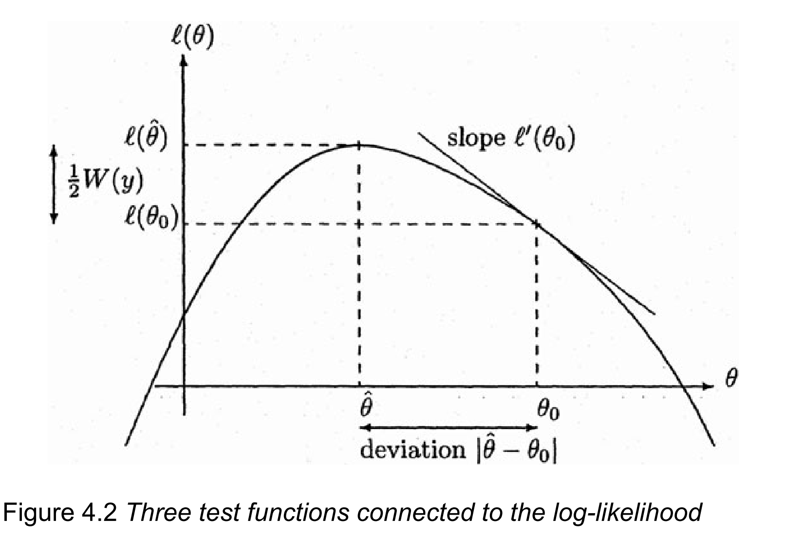

| n | deaths | logdose |
|---|---|---|
| 59 | 6 | 1.6907 |
| 60 | 13 | 1.7242 |
| 62 | 18 | 1.7552 |
| 56 | 28 | 1.7842 |
| 63 | 52 | 1.8113 |
| 59 | 53 | 1.8369 |
| 62 | 61 | 1.8610 |
| 60 | 60 | 1.8839 |
Generalized Linear Models
Statistics III - CdL SSE
Tommaso Rigon
Università degli Studi di Milano-Bicocca
Homepage

This unit will cover the following topics:
- Exponential dispersion families
- Likelihood, inference, and testing
- Iteratively Re-weighted Least Squares (IRLS)
- Deviance, model checking, and residuals
- Model selection
GLMs are regression models with a linear predictor, where the response variable follows an exponential dispersion family.
The symbol üìñ means that a few extra steps are discussed in the handwritten notes.
Introduction
Preliminaries
GLMs are a class of regression models in which a response random variable Y_i is modeled as a function of a vector of covariates \bm{x}_i \in \mathbb{R}^p.
The random variables Y_i are not restricted to be Gaussian. For example:
- Y_i \in \{0,1\}, known as binary regression
- Y_i \in \{0,1,\dots\}, known as count regression
- Y_i \in (0,\infty) or Y_i \in (-\infty,\infty)
- Y_i \in \{0,1\}, known as binary regression
Gaussian linear models are a special case of GLMs, arising when Y_i \in (-\infty,\infty).
The response random variables are collected in the random vector \bm{Y} = (Y_1,\dots,Y_n)^T, whose observed realization is \bm{y} = (y_1,\dots,y_n)^T.
The design matrix \bm{X} is an n \times p non-stochastic matrix containing the covariate values. The jth variable (column) is denoted by \tilde{\bm{x}}_j, while the ith observation (row) is \bm{x}_i.
We assume that \bm{X} has full rank, that is, \text{rk}(\bm{X}) = p with p \le n.
Beetles data, from Bliss (1935)
- The
Beetlesdataset originates from Bliss (1935). It records the number of adult flour beetles that died after a 5-hour exposure to gaseous carbon disulphide.
We aim to predict the proportion of
deathsas a function oflogdose.Modeling death proportions directly with linear models is inappropriate. A variable transformation provides a more principled solution, but it comes with drawbacks.
Beetles data, a dose-response plot

- There is a clear positive and non-linear pattern between the proportion of deaths as a function of the logdose. The response variable take values in [0, 1].
Modelling the Beetles data
Let Y_i be the number of dead beetles out of m_i, and let x_i denote the log-dose. By definition, S_i \in \{0, 1, \dots, m_i\} for i = 1,\dots,8.
It is natural to model each Y_i as independent binomial random variables, counting the number of deaths out of m_i individuals. In other words: S_i \overset{\text{ind}}{\sim} \text{Binomial}(m_i, \pi_i), \qquad i = 1,\dots,8, where \pi_i is the probability of death at a given dose x_i. Moreover, we have \mathbb{E}\left(\frac{S_i}{m_i}\right) = \pi_i = \mu_i.
A modeling approach, called logistic regression, specifies:
g(\pi_i) = \log\left(\frac{\pi_i}{1 - \pi_i}\right) = \beta_1 + \beta_2 x_i \quad \Longrightarrow \quad \pi_i = g^{-1}(\beta_1 + \beta_2 x_i) = \frac{\exp(\beta_1 + \beta_2 x_i)}{1 + \exp(\beta_1 + \beta_2 x_i)}. for some parameters \beta_1, \beta_2 \in \mathbb{R}. Note that \pi_i \in (0, 1) by construction.
Beetles data, fitted model

- The maximum likelihood estimates are \hat{\beta}_1 = -60.72 and \hat{\beta}_2 = 34.3. This yields the predictive curve \hat{\pi}(x) = g^{-1}(\hat{\beta}_1 + \hat{\beta}_2 x), which estimates the mean proportion \mathbb{E}(S_i / m_i).
A comparison with old tools I üìñ
Let Y_i = S_i / m_i be the proportion of deaths. A direct application of linear models implies: Y_i = \beta_1 + \beta_2 x_i + \epsilon_i. The coefficients \beta_1 and \beta_2 are then estimated using OLS using Y_i as response.
The prediction \hat{\beta}_1 + \hat{\beta}_2 x_i is unrestricted, meaning it could produce values like “1.3” or “-2” as estimated proportions, which is clearly undesirable.
The additive structure Y_i = \beta_1 + \beta_2 x_i + \epsilon_i cannot hold with iid errors \epsilon_i, because S_i, and thus Y_i, are discrete. As a result, the errors are always heteroschedastic.
If m_i = 1, i.e. when the data are binary, all the above issues are exacerbated.
This approach is sometimes called the linear probability model. Before GLMs, it was considered acceptable despite its issues, but by modern standards it should not be used.
A comparison with old tools II üìñ
We consider the empirical logit variable transformation of S_i = Y_i / m_i, obtaining
\text{logit}(\tilde{Y}_i) = \log\left(\frac{S_i + 0.5}{m_i - S_i + 0.5}\right) = \beta_1 + \beta_2 x_i + \epsilon_i, \qquad \tilde{Y}_i = \frac{S_i + 0.5}{m_i +1}.
A correction term is necessary because otherwise g(\cdot) = \text{logit}(\cdot) is undefined. The predictions belong to (0, 1), since
\hat{\pi}_i = g^{-1}[\mathbb{E}\{g(\tilde{Y}_i)\}] = g^{-1}(\hat{\beta}_1 + \hat{\beta}_2 x_i) = \frac{\exp(\hat{\beta}_1 + \hat{\beta}_2 x_i)}{1 + \exp(\hat{\beta}_1 + \hat{\beta}_2 x_i)}, in which \hat{\beta}_1 and \hat{\beta}_2 are estimated with OLS using \text{logit}(\tilde{Z}_i) as response.
The interpretation of \hat{\beta} is less clear, as they refer to the mean of \text{logit}(\tilde{Y}_i) instead of \mathbb{E}(Y_i).
An arbitrary boundary correction is needed.
Inference is problematic and requires further corrections, because of heteroschedastic errors.
This approach is not compatible with the reasonable assumption S_i \sim \text{Binomial}(m_i, \pi_i).
A comparison with old tools III

- The black line is the predicted curve of a logistic regression GLM. The orange line is the predictived curve of a linear model. The blue line is the predictive curve of a linear model after an empirical logit variable transformation.
Aids data
- Number of AIDS
deathsin Australia in a sequence of three-months periods between 1983 and 1986.
| 1983-1 | 1984-1 | 1985-1 | 1986-1 | 1983-2 | 1984-2 | 1985-2 | |
|---|---|---|---|---|---|---|---|
| deaths | 0 | 1 | 2 | 3 | 1 | 4 | 8 |
| period | 1 | 2 | 3 | 4 | 5 | 6 | 7 |
| 1986-2 | 1983-3 | 1984-3 | 1985-3 | 1986-3 | 1983-4 | 1984-4 | |
|---|---|---|---|---|---|---|---|
| deaths | 17 | 23 | 32 | 20 | 24 | 37 | 45 |
| period | 8 | 9 | 10 | 11 | 12 | 13 | 14 |
We are interested in predicting the number of
deathsas a function of theperiodof time.The response variable Y_i \in \{0, 1, \dots\} is a non-negative count.
Aids data, scatter plot
- There is a clear positive association between period and deaths. However, the increase appears to be faster than linear. Note that both the mean and the variability of Y_i increase over time.
Modelling the Aids data
- Let Y_i be the number of deaths, and let x_i denote the period. By definition, Y_i \in \{0, 1, \dots\} are non-negative counts, for i = 1,\dots,14.
We model Y_i as independent Poisson random variables, counting the number of deaths: Y_i \overset{\text{ind}}{\sim} \text{Poisson}(\mu_i), \qquad i = 1,\dots,14, where \mu_i is the mean of Y_i, namely \mathbb{E}(Y_i) = \mu_i.
A modeling approach, called Poisson regression, specifies:
g(\mu_i) = \log(\mu_i) = \beta_1 + \beta_2 x_i \quad \Longrightarrow \quad \mu_i = g^{-1}(\beta_1 + \beta_2 x_i) = \exp(\beta_1 + \beta_2 x_i), for some parameters \beta_1, \beta_2 \in \mathbb{R}. Note that \mu_i > 0 by construction.Under this specification, the variances of the observations are
\text{var}(Y_i) = \mu_i = \exp(\beta_1 + \beta_2 x_i), which increases with x, as desired. This implies that Y_1,\dots,Y_n are heteroschedastic, but this is not an issue in GLMs, as this aspect is automatically accounted for.
Aids data, fitted model

- The maximum likelihood estimates are \hat{\beta}_1 = 0.304 and \hat{\beta}_2 = 0.259. This yields the predictive curve \hat{\mu}(x) = \exp(\hat{\beta}_1 + \hat{\beta}_2 x), which estimates the mean \mathbb{E}(Y_i).
A comparison with old tools I
We consider the variance-stabilizing transformation S_i = \sqrt{Y_i}, obtaining
\sqrt{Y_i} = \beta_1 + \beta_2 x_i + \epsilon_i.
The predictions belong to (0, \infty), since
\hat{\mu}_i = \mathbb{E}(\sqrt{Y_i})^2 = (\hat{\beta}_1 + \hat{\beta}_2 x_i)^2, in which \hat{\beta}_1 and \hat{\beta}_2 are estimated with OLS using \sqrt{Y_i} as response.
The interpretation of \hat{\beta} is less clear, as they refer to the mean of \sqrt{Y}_i instead of \mathbb{E}(Y_i).
This approach is not compatible with the reasonable assumption Y_i \sim \text{Poisson}(\mu_i) and it only valid as an asymptotic approximation.
To compare such a model with a similar specification, we also fit another Poisson GLM in which Y_i \overset{\text{ind}}{\sim} \text{Poisson}(\mu_i), \qquad \sqrt{\mu_i} = \beta_1 + \beta_2 x_i, \qquad i=1,\dots,14.
A comparison with old tools II
- The black line is the predicted curve of a Poisson regression GLM with logarithmic link. The orange line is the predicted curve of a linear model with a square-root transformation. The blue line is the predictive curve of a Poisson regression GLM with square-root link.
The components of a GLM
- Random component. This specifies the probability distribution response variable Y_i. The observations \bm{y} =(y_1,\dots,y_n) on that distribution are treated as independent.
- Linear predictor. For a parameter vector \bm{\beta} = (\beta_1,\dots,\beta_p)^T and an n \times p design matrix \bm{X}, the linear predictor is \bm{\eta} = \bm{X}\beta. We will also write \eta_i = \bm{x}_i^T\beta = \beta_1x_{i1} + \cdots + x_{ip}\beta_p, \qquad i=1,\dots,n.
- Link function. This is an invertible and differentiable function g(\cdot) applied to each component of the mean \mu_i = \mathbb{E}(Y_i) that relates it to the linear predictor: g(\mu_i) = \eta_i = \bm{x}_i^T\beta, \qquad \Longrightarrow \qquad \mu_i = g^{-1}(\eta_i) = g^{-1}(\bm{x}_i^T\beta).
Note that, in general, we cannot express the response in an additive way Y_i = g^{-1}(\eta_i) + \epsilon_i.
Random component of a GLM
In GLMs the random variables Y_i are independent and they are distributed according to an exponential dispersion family, whose definition will be provided in a few slides.
The distributions most commonly used in Statistics, such as the normal, binomial, gamma, and Poisson, are exponential family distributions.
Exponential dispersion families are characterized by their mean and variance. Let v(\mu) > 0 be a function of the mean, called variance function and let a_i(\phi) >0 be functions of an additional unknown parameter \phi > 0 called dispersion.
In a GLMs the observations are independent draws from a distribution \text{ED}(\mu_i, a_i(\phi)v(\mu_i)): Y_i \overset{\text{ind}}{\sim} \text{ED}(\mu_i, a_i(\phi)v(\mu_i)), \qquad \mathbb{E}(Y_i) = \mu_i, \qquad g(\mu_i) = \bm{x}_i^T\beta, with \mu_i \in \mathcal{M}. Moreover, the variance is connected to the mean via v(\mu): \text{var}(Y_i) = a_i(\phi) v(\mu_i), where a_i(\phi) = \phi / \omega_i and \omega_i are known weights. Special cases are a_i(\phi) = \phi and a_i(\phi) = 1.
Notable examples
In a Gaussian linear model we consider the identity link g(\mu) = \mu and let Y_i \overset{\text{ind}}{\sim}\text{N}(\mu_i, \sigma^2), \qquad \mu_i = \bm{x}_i^T\beta. The unknown variance \sigma^2 = \phi is called dispersion in GLMs. The parameter space is \mathcal{M} = \mathbb{R}, whereas a_i(\phi) = \phi and the variance function is constant v(\mu) = 1 (homoschedasticity).
In a binomial regression model with logit link g(\mu) = \text{logit}(\mu) we let Y_i = S_i/m_i and S_i \overset{\text{ind}}{\sim}\text{Binomial}(m_i, \pi_i),\qquad \mathbb{E}\left(Y_i\right) = \pi_i = \mu_i, \qquad \text{logit}(\mu_i) = \bm{x}_i^T\beta. We have a_i(\phi) = 1/m_i and v(\mu) = \mu(1-\mu). There is no dispersion parameter.
In Poisson regression with logarithmic link g(\mu) = \log(\mu) we let Y_i \overset{\text{ind}}{\sim}\text{Poisson}(\mu), \qquad \log(\mu_i) = \bm{x}_i^T\beta. We have a_i(\phi) = 1 and v(\mu) = \mu. There is no dispersion parameter.
Exponential dispersion families
Overview
- Figure 1 of Efron (2023). Three level of statistical modeling.

The prime role of exponential families in the theory of statistical inference was first emphasized by Fisher (1934).
Most well-known distributions—such as Gaussian, Poisson, Binomial, and Gamma—are instances of exponential families.
Exponential dispersion family: definition
The density of Y_i belongs to an exponential dispersion family if it can be written as p(y_i; \theta_i, \phi) = \exp\left\{\frac{\theta_i y_i - b(\theta_i)}{a_i(\phi)} + c(y_i, \phi)\right\}, where y_i \in \mathcal{Y} \subseteq \mathbb{R}, \theta_i \in \Theta \subseteq\mathbb{R} and a_i(\phi) = \phi / \omega_i where \omega_i are known positive weights. The parameter \theta_i is called natural parameter while \phi is called dispersion parameter.
By specifying the functions a_i(\cdot), b(\cdot) and c(\cdot) one obtain a particular parametric model.
The support \mathcal{Y} of Y_i does not depend on the parameters \phi or \theta_i and b(\cdot) can be differentiated infinitely many times. In particular, this is a regular statistical model.
As mentioned, special cases are a_i(\phi) = \phi and a_i(\phi) = 1. When a_i(\phi) = 1 and c(y_i, \phi) = c(y_i) we obtain p(y_i; \theta_i) = \exp\left\{\theta_i y_i - b(\theta_i) + c(y_i)\right\}, which is called natural exponential family of order 1.
Mean and variance I üìñ
Let us consider the log-likelihood contribution of the ith observations, which is defined as \ell(\theta_i, \phi; y_i) = \log{p(y_i; \theta_i, \phi)} = \frac{\theta_i y_i - b(\theta_i)}{a_i(\phi)} + c(y_i, \phi). If you prefer, this is the log-likelihood when the sample size n = 1 and we only observe Y_i.
The score and hessian functions, namely the first and second derivative over \theta_i are \frac{\partial}{\partial \theta_i} \ell(\theta_i, \phi; y_i) = \frac{y_i - b'(\theta_i)}{a_i(\phi)}, \qquad \frac{\partial^2}{\partial \theta_i^2}\ell(\theta_i, \phi; y_i) = \frac{-b''(\theta_i)}{a_i(\phi)}. where b'(\cdot) and b''(\cdot) denote the first and second derivative of b(\cdot).
Recall the following Bartlett identities, valid in any regular statistical model: \begin{aligned} \mathbb{E}\left(\frac{\partial}{\partial \theta_i} \ell(\theta_i, \phi; Y_i) \right) &= 0, \\ \mathbb{E}\left\{\left(\frac{\partial}{\partial \theta_i} \ell(\theta_i, \phi; Y_i) \right)^2\right\} = \text{var}\left(\frac{\partial}{\partial \theta_i} \ell(\theta_i, \phi; Y_i) \right) &= \mathbb{E}\left(-\frac{\partial^2}{\partial \theta_i^2}\ell(\theta_i, \phi; Y_i)\right). \end{aligned}
Mean and variance II üìñ
- Specializing Bartlett identities in exponential dispersion families, we obtain \mathbb{E}\left(\frac{Y_i - b'(\theta_i)}{a_i(\phi)}\right) = 0, \qquad \text{var}\left(\frac{Y_i - b'(\theta_i)}{a_i(\phi)}\right) = \frac{\text{var}(Y_i)}{a_i(\phi)^2} = \frac{b''(\theta_i)}{a_i(\phi)}. Re-arranging the terms, we finally get the following key result.
Let Y_i be an exponential dispersion family, identified by the functions a_i(\cdot), b(\cdot) and c(\cdot), and with natural parameter \theta_i. Then the mean and the variance of Y_i equal \mathbb{E}(Y_i) = b'(\theta_i), \qquad \text{var}(Y_i) = a_i(\phi) b''(\theta_i).
The mean \mu_i = b'(\theta_i) does not depend on the dispersion parameter.
We have b''(\cdot) > 0 because \text{var}(Y_i), which means that b(\cdot) is a convex function.
Moreover, the function b'(\theta) is continuous and monotone increasing and hence invertible.
Mean parametrization, variance function
Let Y_i be an exponential dispersion family, identified by the functions a_i(\cdot), b(\cdot) and c(\cdot), and with natural parameter \theta_i, then \mu(\theta_i):= \mu_i = \mathbb{E}(Y_i) = b'(\theta_i). The function \mu(\cdot) : \Theta \to\mathcal{M} is one-to-one and invertible, that is, a reparametrization of \theta_i. We call \mu_i the mean parametrization of an exponential dispersion family.
The inverse relationship, re-obtaining \theta_i as a function of \mu_i, is denoted with \theta_i = \theta(\mu_i) = b'^{-1}(\mu_i).
Using this notation, we can express the variance of Y_i as a function of \mu_i as follows \text{var}(Y_i) = a_i(\phi)b''(\theta_i) = a_i(\phi)b''(\theta(\mu_i)) = a_i(\phi)v(\mu_i), where v(\mu_i) := b''(\theta(\mu_i)) is the variance function.
The domain \mathcal{M} and the variance function v(\mu) characterize the function b(\cdot) and the entire distribution, for any given a_i(\phi). This justifies the notation Y_i \sim \text{ED}(\mu_i, a_i(\phi)v(\mu_i)).
Gaussian distribution üìñ
Let Y_i \sim \text{N}(\mu_i, \sigma^2). The density function of Y_i can be written as \begin{aligned} p(y_i; \mu_i, \sigma^2) &= \frac{1}{\sqrt{2 \pi \sigma^2}}\exp\left\{-\frac{1}{2\sigma^2}(y_i - \mu_i)^2\right\} \\ &=\exp\left\{\frac{y_i \mu_i - \mu_i^2/2}{\sigma^2}- \frac{\log(2\pi\sigma^2)}{2}-\frac{y_i^2}{2\sigma^2}\right\} \end{aligned}
Then, we can recognize the following relationships: \theta_i = \theta(\mu_i) = \mu_i, \quad a_i(\phi) = \phi = \sigma^2, \quad b(\theta_i) = \frac{\theta_i^2}{2}, \quad c(y_i, \phi) = - \frac{\log(2\pi\phi)}{2}-\frac{y_i^2}{2\phi}. In the Gaussian case, the mean parametrization and the natural parametrization coincide. Moreover, the dispersion \phi coincides with the variance \sigma^2.
Using the results we previously discussed, we obtain the well-known relationships \mathbb{E}(Y_i) = b'(\theta_i) = \theta_i, \qquad \text{var}(Y_i) = a_i(\phi)b''(\theta_i) = \phi. The variance function v(\mu_i) = 1 is constant. We will write Y_i \sim \text{ED}(\mu_i, \phi) with \mu_i \in \mathcal{M} = \mathbb{R}.
Poisson distribution üìñ
Let Y_i \sim \text{Poisson}(\mu_i). The pdf function of Y_i can be written as \begin{aligned} p(y_i; \mu_i) &= \frac{\mu_i^{y_i} e^{-\mu_i}}{y_i!}=\exp\{y_i \log(\mu_i) - \mu_i - \log(y_i!)\} \\ &=\exp\{y_i \theta_i - e^{\theta_i} - \log(y_i!)\}, \qquad y_i = 0, 1, 2,\dots. \end{aligned}
Then, we can recognize the following relationships: \begin{aligned} \theta_i &= \theta(\mu_i) = \log(\mu_i), \quad &&a_i(\phi) = 1, \\ b(\theta_i) &= e^{\theta_i}, \quad &&c(y_i, \phi) = c(y_i) = -\log(y_i!). \end{aligned} There is no dispersion parameter since a_i(\phi) = 1.
Using the results we previously discussed, we obtain the well-known relationships \begin{aligned} \mathbb{E}(Y_i) &= b'(\theta_i) = e^{\theta_i} = \mu_i, \\ \text{var}(Y_i) &= a_i(\phi) b''(\theta_i) = e^{\theta_i} = \mu_i. \end{aligned} The variance function v(\mu_i) = \mu_i is linear. We will write Y_i \sim \text{ED}(\mu_i, \mu_i) with \mu_i \in (0, \infty).
Gamma distribution I üìñ
Let Y_i \sim \text{Gamma}(\alpha, \lambda_i). The density function of Y_i can be written as \begin{aligned} p(y_i; \alpha, \lambda_i) &= \frac{\lambda_i^\alpha y_i^{\alpha-1}\alpha e^{-\lambda_i y_i}}{\Gamma(\alpha)} \\ &=\exp\left\{\alpha\log{\lambda_i} - \lambda_i y_i + (\alpha-1)\log{y_i} - \log{\Gamma}(\alpha)\right\} \\ &=\exp\left\{\alpha\left(\log{\lambda_i} - \frac{\lambda_i}{\alpha} y_i\right) + (\alpha-1)\log{y_i} - \log{\Gamma}(\alpha)\right\} \\ &=\exp\left\{\frac{\theta_i y_i + \log(-\theta_i)}{\phi} - (1/\phi)\log{\phi}+ (1/\phi - 1)\log{y_i} - \log{\Gamma}(1/\phi)\right\}, \qquad y > 0,\\ \end{aligned} having defined the dispersion \phi = 1/\alpha and the natural parameter \theta_i = -\lambda_i/\alpha.
Then, we can recognize the following relationships: \begin{aligned} \quad a_i(\phi) &= \phi, \qquad b(\theta_i) = - \log(-\theta_i), \\ c(y_i, \phi) &= - (1/\phi)\log{\phi}+ (1/\phi - 1)\log{y_i} - \log{\Gamma}(1/\phi). \end{aligned}
Gamma distribution II üìñ
Using the results we previously discussed, we obtain the well-known relationships \mathbb{E}(Y_i) = b'(\theta_i) = - \frac{1}{\theta_i} = \frac{\alpha}{\lambda_i} = \mu_i, \qquad \text{var}(Y_i) = a_i(\phi)b''(\theta_i) = \frac{\phi}{\theta_i^2} = \frac{\alpha}{\lambda_i^2}.
At the same time, we can write the inverse relationship linking \theta_i to the mean as \theta_i = \theta(\mu_i) = - \frac{1}{\mu_i} from which we finally obtain the following quadratic variance function v(\mu_i) = \mu_i^2.
We will write Y_i \sim \text{ED}(\mu_i, \phi\mu_i^2) with \mu_i \in (0, \infty).
Binomial distribution I üìñ
- Let S_i \sim \text{Binomial}(m_i, \pi_i), with \pi_i \in (0, 1). The random variable Y_i = S_i/m_i has density \begin{aligned} p(y_i; m_i, \pi_i) &= \binom{m_i}{m_i y_i}\pi_i^{m_i y_i}(1 - \pi_i)^{m_i - m_i y_i}\\ &=\binom{m_i}{m_i y_i}\left(\frac{\pi_i}{1 - \pi_i}\right)^{m_i y_i}(1 - \pi_i)^{m_i}\\ &=\exp\left\{m_iy_i\log\left(\frac{\pi_i}{1 - \pi_i}\right) + m_i\log(1 - \pi_i) + \log\binom{m_i}{m_i y_i}\right\}, \end{aligned} for y_i \in \{0, 1/m_i, 2/m_2, \dots, m_i/m_i\}. This can be written as p(y_i; m_i, \pi_i) =\exp\left\{\frac{y_i\theta_i - \log\{1 + \exp(\theta_i)\}}{1/m_i}+ \log\binom{m_i}{m_i y_i}\right\}, where the natural parameter is \theta_i = \text{logit}(\pi_i) = \log\{\pi/(1-\pi_i)\}.
Binomial distribution II üìñ
Note that \mathbb{E}(Y_i) = \mathbb{E}(Z_i / m_i) = \pi_i = \mu_i. This means there no dispersion parameter \phi and \theta_i = \text{logit}(\mu_i), \quad a_i(\phi) = \frac{1}{m_i}, \quad b(\theta_i) = \log\{1 + \exp(\theta_i)\}, \quad c(y_i) = \log\binom{m_i}{m_i y_i}.
Using the general formulas therefore we obtain \begin{aligned} \mathbb{E}(Y_i) &= b'(\theta_i) = \frac{\exp(\theta_i)}{1 + \exp(\theta_i)} = \mu_i, \\ \text{var}(Y_i) &= a_i(\phi)b''(\theta_i) = \frac{1}{m_i}\frac{\exp(\theta_i)}{[1 + \exp(\theta_i)]^2} = \frac{\mu_i (1 - \mu_i)}{m_i}, \end{aligned} from which we obtain that the variance function is v(\mu_i) = \mu_i(1-\mu_i) is quadratic.
We will write Y_i \sim \text{ED}(\mu_i, \mu_i(1-\mu_i)) with \mu_i \in \mathcal{M} = (0, 1).
Notable exponential dispersion families
| Model | \text{N}(\mu_i, \sigma^2) | \text{Gamma}(\alpha, \alpha/\mu_i) | \frac{1}{m_i}\text{Binomial}(m_i, \mu_i) | \text{Poisson}(\mu_i) |
|---|---|---|---|---|
| Support \mathcal{Y} | \mathbb{R} | [0, \infty) | \{0, 1/m_i,\dots, 1\} | \mathbb{N} |
| \theta_i | \mu_i | - 1/\mu_i | \log\left(\frac{\mu_i}{1 - \mu_i}\right) | \log{\mu_i} |
| Parametric space \Theta | \mathbb{R} | (-\infty, 0) | \mathbb{R} | \mathbb{R} |
| b(\theta_i) | \theta_i^2/2 | -\log(-\theta_i) | \log\{1 + \exp(\theta_i)\} | \exp(\theta_i) |
| \phi | \sigma^2 | 1/\alpha | 1 | 1 |
| a_i(\phi) | \sigma^2 | 1/\alpha | 1/m_i | 1 |
| \mathcal{M} | \mathbb{R} | (0, \infty) | (0, 1) | (0, \infty) |
| v(\mu_i) | 1 | \mu_i^2 | \mu_i(1-\mu_i) | \mu_i |
The list of exponential dispersion families does not end here. Other examples are the inverse Gaussian, the negative binomial and hyperbolic secant distributions.
Link functions and canonical link
To complete the GLM specification, we need to choose a link function g(\cdot) such that: g(\mu_i) = \bm{x}_i^T\beta, \qquad \theta_i = \theta(\mu_i) \quad \Longrightarrow \quad \theta_i = \theta(g^{-1}(\bm{x}_i^T\beta)).
It is fairly natural to consider a monotone and differentiable link function g(\cdot) : \mathcal{M} \to \mathbb{R} so that the inverse g^{-1}(\cdot) : \mathbb{R} \to \mathcal{M}. This ensures that the predictions are well-defined. \mathbb{E}(Y_i) = g^{-1}(\bm{x}_i^T\beta) \in \mathcal{M}.
For example, in binary regression any continuous cumulative distribution function for g^{-1}(\cdot) leads to a good link function, such as g(\cdot) = \Phi(\cdot) (probit) or g^{-1}(\eta_i) = e^{\eta_i}/(1 + e^{\eta_i}) (logistic).
The following link is called canonical link and it is implied by the distribution: g(\mu_i) = \theta(\mu_i) \quad \Longrightarrow \quad \theta_i = \bm{x}_i^T\beta. Such a choice leads to remarkable simplifications in the likelihood function.
- The identity link is canonical for the Gaussian, the logarithm is canonical for the Poisson, the logit is canonical for the Binomial and the reciprocal is canonical for the Gamma.
Likelihood quantities
Likelihood function
Let Y_i \overset{\text{ind}}{\sim}\text{ED}(\mu_i, a_i(\phi)v(\mu_i)) be the response variable of a GLM, with g(\mu_i) = \bm{x}_i^T\beta. The joint distribution of the responses \bm{Y} = (Y_1,\dots,Y_n) is p(\bm{y}; \beta, \phi) = \prod_{i=1}^np(y_i; \beta, \phi) = \prod_{i=1}^n \exp\left\{\frac{y_i\theta_i - b(\theta_i)}{a_i(\phi)} + c(y_i, \phi)\right\}. with \theta_i = \theta(\mu_i) = \theta(g^{-1}(\bm{x}_i^T\beta)).
The log-likelihood function therefore is \ell(\beta, \phi) = \sum_{i=1}^n\frac{y_i\theta_i - b(\theta_i)}{a_i(\phi)} + c(y_i, \phi).
- In general, there is no sufficient statistic with dimension smaller than n.
☠️ - Sufficient statistics and canonical link
- Consider the canonical link, namely \theta(\mu_i) = g(\mu_i) so that \theta_i = \bm{x}_i^T\beta. Then the log-likelihood function simplifies: \begin{aligned} \ell(\beta, \phi) &= \sum_{i=1}^n\frac{y_i\bm{x}_i^T\beta - b(\bm{x}_i^T\beta)}{a_i(\phi)} + c(y_i, \phi) \\ &= \left[\beta_1\sum_{i=1}^n\frac{x_{i1}y_i}{a_i(\phi)} + \cdots + \beta_p\sum_{i=1}^n\frac{x_{ip}y_i}{a_i(\phi)} \right] - \sum_{i=1}^n\frac{b(\bm{x}_i^T\beta)}{a_i(\phi)} + c(y_i, \phi). \end{aligned} If \phi were known, say a_i(\phi) = 1 or a_i(\phi) = 1/\omega_i, then \left(\sum_{i=1}^n\frac{1}{a_i(\phi)}x_{i1}y_i, \dots, \sum_{i=1}^n\frac{1}{a_i(\phi)}x_{ip}y_i \right), is (minimal) sufficient of dimension p \le n for inference on \beta.
- In logistic regression for binary observations and Poisson regression with logarithmic link we have a_i(\phi) = 1. The sufficient statistic is \bm{X}^T\bm{y} = \sum_{i=1}^n\bm{x}_iy_i = \left(\sum_{i=1}^nx_{i1}y_i, \dots, \sum_{i=1}^nx_{ip}y_i \right).
Likelihood equations I üìñ
To conduct inference using the classical theory (as in Statistica II), we need to consider the first and second derivative of the log-likelihood, that is, the score function \ell_*(\beta;\phi) := \frac{\partial}{\partial \beta_r}\ell(\beta; \phi), \qquad r=1,\dots,p, and the observed information matrix \bm{J}, whose elements are j_{rs} = - \frac{\partial}{\partial \beta_r}\frac{\partial}{\partial \beta_s}\ell(\beta; \phi), \qquad r, s=1,\dots,p.
These quantities have a simple expression in the end, but getting there requires quite a bit of calculus.
Let us focus on the estimation of \beta, assuming for now that \phi is a known parameter, as is the case in binomial or Poisson regression.
This assumption is not restrictive, even when \phi is actually unknown. In fact, we will show that the maximum likelihood estimate \hat{\beta} does not depend on \phi, and that \beta and \phi are orthogonal.
Likelihood equations II üìñ
Let us begin by noting that \ell_*(\beta;\phi) = \frac{\partial}{\partial \beta_r}\ell(\beta; \phi) = \sum_{i=1}^n\frac{1}{a_i(\phi)} \left(y_i \frac{\partial \theta_i}{\partial \beta_r} - \frac{\partial b(\theta_i)}{\partial \beta_r} \right), \qquad r = 1,\dots,p. Such an expression can be simplified because \frac{\partial b(\theta_i)}{\partial \beta_r} = b'(\theta_i)\frac{\partial \theta_i}{\partial \beta_r} = \mu_i\frac{\partial \theta_i}{\partial \beta_r}, which implies that the score function will have the following structure: \frac{\partial}{\partial \beta_r}\ell(\beta; \phi) = \sum_{i=1}^n\frac{1}{a_i(\phi)}(y_i - \mu_i)\frac{\partial \theta_i}{\partial \beta_r}, \qquad r=1,\dots,p.
Recall that a_i(\phi) = \phi/\omega_i, hence the maximum likelihood estimator is obtained by solving: \textcolor{red}{\cancel{\frac{1}{\phi}}}\sum_{i=1}^n\omega_i(y_i - \mu_i)\frac{\partial \theta_i}{\partial \beta_r} = 0, \qquad r=1,\dots,p.
Likelihood equations III üìñ
Let f(x) be a function with inverse g(x) = f^{-1}(x) and first derivative f'(x). Then \frac{\partial g}{\partial{x}} = [f^{-1}]'(x) = \frac{1}{f'(f^{-1}(x))}.
- Recall that g(\mu_i) = \bm{x}_i^T\beta = \eta_i and that \theta_i = \theta(\mu_i) is the inverse of \mu(\theta_i). As an application of the above lemma: \frac{\partial \theta_i}{\partial \mu_i} = \theta'(\mu_i) = \frac{1}{\mu'(\theta(\mu_i))}= \frac{1}{b''(\theta(\mu_i))} = \frac{1}{v(\mu_i)}, Moreover, since we \mu_i = g^{-1}(\eta_i) we obtain \frac{\partial \mu_i}{\partial \eta_i} = \frac{1}{g'(g^{-1}(\eta_i))} = \frac{1}{g'(\mu_i)}.
- Summing up, the chain rule of derivation for composite functions gives: \frac{\partial \theta_i}{\partial \beta_r} = \frac{\partial \theta_i}{\partial \mu_i} \frac{\partial \mu_i}{\partial \eta_i} \frac{\partial \eta_i}{\partial\beta_r} = \frac{1}{v(\mu_i)}\frac{1}{g'(\mu_i)}x_{ir}, \qquad r=1,\dots,p.
Likelihood equations IV üìñ
- Combining all the above equations, we obtain an explicit formula for the score function \frac{\partial}{\partial \beta_r}\ell(\beta; \phi) = \frac{1}{\phi}\sum_{i=1}^n \omega_i \frac{(y_i - \mu_i)}{v(\mu_i)}\frac{x_{ir}}{g'(\mu_i)} = \sum_{i=1}^n \frac{(y_i - \mu_i)}{\text{var}(Y_i)}\frac{x_{ir}}{g'(\mu_i)}, \qquad r=1,\dots,p.
The maximum likelihood estimator solves the likelihood equations: \sum_{i=1}^n \omega_i \frac{(y_i - \mu_i)}{v(\mu_i)}\frac{x_{ir}}{g'(\mu_i)} = 0, \qquad r=1,\dots,p, which do not depend on \phi. In matrix notation \bm{D}^T \bm{V}^{-1}(\bm{y} - \bm{\mu}) = \bm{0}, where \bm{V} = \text{diag}(v(\mu_1)/\omega_1,\dots,v(\mu_n)/\omega_n) and \bm{D} is an n \times p matrix whose elements are d_{ir} = \frac{\partial \mu_i}{\partial \beta_r} =\frac{\partial \mu_i}{\partial \eta_i} \frac{\partial \eta_i}{\partial\beta_r} =\frac{1}{g'(\mu_i)}x_{ir}, \qquad i=1,\dots,n, \quad r=1,\dots,p.
Canonical link: simplifications üìñ
- When using the canonical link \theta(\mu_i) = g(\mu_i) significant simplifications arise, because \frac{\partial \theta_i}{\partial \mu_i}= \frac{1}{v(\mu_i)} = g'(\mu_i) \quad \Longrightarrow\quad v(\mu_i)g'(\mu_i) = 1. Thus, plugging-in this equality in the former equations, gives: \frac{\partial \theta_i}{\partial \beta_r} = x_{ir}, \qquad r=1,\dots,p, which is not surprising, because the canonical link implies \theta_i = x_{i1}\beta_1 + \cdots + x_{ip}\beta_p.
The likelihood equations under the canonical link are \sum_{i=1}^n \omega_i (y_i - \mu_i)x_{ir} = 0, \qquad r=1,\dots,p. Let \bm{\Omega} = \text{diag}(\omega_1,\dots,\omega_n), then in matrix notation we have \bm{X}^T\bm{\Omega}(\bm{y} - \bm{\mu}) = \bm{0}. The equations simplify even further when the weights are constant, i.e. \bm{\Omega} = I_n, yielding \bm{X}^T(\bm{y} - \bm{\mu}) = \bm{0}.
Examples of estimating equations
Let Y_i \sim \text{ED}(\mu_i, \phi) with g(\mu_i) = \mu_i, namely the Gaussian linear model with the identity (canonical) link. The likelihood equations are \bm{X}^T(\bm{y} - \bm{X}\beta) = \bm{0}, which are also called normal equations. Their solution over \beta is the OLS \hat{\beta} = (\bm{X}^T\bm{X})^{-1}\bm{X}^T\bm{y}.
Let Y_i \sim \text{ED}(\mu_i, \phi/\omega_i) with g(\mu_i) = \mu_i, namely the Gaussian linear model with the identity (canonical) link and heteroschedastic errors. The likelihood equations are \bm{X}^T\bm{\Omega}(\bm{y} - \bm{X}\beta) = \bm{0}, Their solution over \beta is the weighted least square estimator \hat{\beta}_\text{wls} = (\bm{X}^T\bm{\Omega}\bm{X})^{-1}\bm{X}^T\bm{\Omega}\bm{y}.
Let Y_i \sim \text{ED}(\mu_i, \mu_i) with g(\mu_i) = \log{\mu_i}, namely a Poisson regression model with the logarithmic (canonical) link. The likelihood equations can be solved numerically \bm{X}^T(\bm{y} - \bm{\mu}) = \bm{0}, \qquad \bm{\mu} = (e^{\bm{x}_1^T\beta}, \dots, e^{\bm{x}_n^T\beta}).
Example: Beetles data
Using the
Beetlesdata, we specified a binomial logistic regression model for the counts m_i Y_i \sim \text{Binomial}(m_i, \pi_i) with mean \mathbb{E}(Y_i) = \pi_i = \exp(\beta_1 + \beta_2 x_i)/(1 + \exp(\beta_1 + \beta_2 x_i)).The maximum likelihood estimate (\hat{\beta}_1, \hat{\beta}_2) is the value solving simultaneously: \sum_{i=1}^n m_i y_i = \sum_{i=1}^n m_i \frac{\exp(\beta_1 + \beta_2x_i)}{1 + \exp(\beta_1 + \beta_2x_i)}, \quad \text{and}\quad \sum_{i=1}^n m_i x_i y_i = \sum_{i=1}^n m_i x_i \frac{\exp(\beta_1 + \beta_2x_i)}{1 + \exp(\beta_1 + \beta_2x_i)}. Unfortunately, there is no closed form solution.
In our case, we have that \sum_{i=1}^n m_i y_i = 291, \qquad \sum_{i=1}^n m_i x_i y_i = 532.2083.
With these values, we can use the numerical algorithm IRLS to solve the above system, obtaining \hat{\beta} = (\hat{\beta}_1, \hat{\beta_2}) = (-60.717, 34.270).
Example: Beetles data
- The predicted response can be computed by using the formula \hat{\mu}_i = \frac{\exp(\hat{\beta}_1 + \hat{\beta}_2x_i)}{1 + \exp(\hat{\beta}_1 + \hat{\beta}_2x_i)} = \frac{\exp(-60.717 + 34.270 x_i)}{1 + \exp(-60.717 + 34.270 x_i)}, \qquad i=1,\dots, 8.
| m_i | deaths (S_i) |
logdose (x_i) |
Y_i = S_i / m_i | \hat{\mu}_i |
|---|---|---|---|---|
| 59 | 6 | 1.691 | 0.102 | 0.059 |
| 60 | 13 | 1.724 | 0.217 | 0.164 |
| 62 | 18 | 1.755 | 0.290 | 0.362 |
| 56 | 28 | 1.784 | 0.500 | 0.605 |
| 63 | 52 | 1.811 | 0.825 | 0.795 |
| 59 | 53 | 1.837 | 0.898 | 0.903 |
| 62 | 61 | 1.861 | 0.984 | 0.955 |
| 60 | 60 | 1.884 | 1.000 | 0.979 |
- The predicted values and the data Y_i were also shown in a plot at the beginning of this unit.
Example: Aids data
In the
Aidsdata, we specified a Poisson regression model with \mathbb{E}(Y_i) = \exp(\beta_1 + \beta_2 x_i).The maximum likelihood estimate (\hat{\beta}_1, \hat{\beta}_2) solve simultaneously: \sum_{i=1}^n y_i = \sum_{i=1}^n \exp(\beta_1 + \beta_2x_i), \quad \text{and}\quad \sum_{i=1}^n x_i y_i = \sum_{i=1}^n x_i\exp(\beta_1 + \beta_2 x_i).
This system does not always admits a solution. This happens, for example, in the extreme case \sum_{i=1}^ny_i = 0, occurring when all counts equal zero.
Using the
Aidsdata we have \sum_{i=1}^ny_i = 217 and \sum_{i=1}^nx_i y_i = 2387. Via numerical methods we solve the above system of equations and we obtain \hat{\beta}_1 = 0.304 and \hat{\beta}_2 = 0.259.The estimated mean values are \hat{\mu}_i = \exp(0.304 + 0.259 x_i) and in particular the mean for the next period is \hat{\mu}_{i+1} = \exp(0.304 + 0.259 (x_i +1)) = \exp(0.259) \hat{\mu}_i = 1.296 \hat{\mu}_i. In other words, the estimated number of deaths increases by about 30\% every trimester.
Example: Aids data
deaths (Y_i) |
period (x_i) |
\hat{\mu}_i | |
|---|---|---|---|
| 1983-1 | 0 | 1 | 1.755 |
| 1984-1 | 1 | 2 | 2.274 |
| 1985-1 | 2 | 3 | 2.946 |
| 1986-1 | 3 | 4 | 3.817 |
| 1983-2 | 1 | 5 | 4.945 |
| 1984-2 | 4 | 6 | 6.407 |
| 1985-2 | 8 | 7 | 8.301 |
| 1986-2 | 17 | 8 | 10.755 |
| 1983-3 | 23 | 9 | 13.934 |
| 1984-3 | 32 | 10 | 18.052 |
| 1985-3 | 20 | 11 | 23.389 |
| 1986-3 | 24 | 12 | 30.302 |
| 1983-4 | 37 | 13 | 39.259 |
| 1984-4 | 45 | 14 | 50.863 |
- The predicted values and the data Y_i were also shown in a plot at the beginning of this unit.
Observed and expected information I üìñ
Let us first consider the negative derivative of the score function, that is the observed information matrix \bm{J} with entries: \begin{aligned} j_{rs} &= -\frac{\partial}{\partial \beta_s}\left[\frac{\partial}{\partial \beta_r}\ell(\beta; \phi)\right] = -\frac{\partial}{\partial \beta_s}\sum_{i=1}^n\frac{1}{a_i(\phi)}(y_i - \mu_i)\frac{\partial \theta_i}{\partial \beta_r} \\ &=\sum_{i=1}^n\frac{1}{a_i(\phi)}\left[\frac{\partial\mu_i}{\partial \beta_s}\frac{\partial\theta_i}{\partial \beta_r} - (y_i - \mu_i) \frac{\partial^2\theta_i}{\partial \beta_r \partial \beta_s}\right], \qquad r,s = 1,\dots,p. \end{aligned}
Let \bm{I} = \mathbb{E}(\bm{J}) be the p \times p Fisher information matrix associated with \beta, whose elements are i_{rs} = \mathbb{E}(j_{rs}) = \mathbb{E}\left(- \frac{\partial}{\partial \beta_r}\frac{\partial}{\partial \beta_s}\ell(\beta; \phi)\right), \qquad r,s = 1,\dots,p.
Thus, the Fisher information matrix substantially simplifies because \mathbb{E}(Y_i) = \mu_i, obtaining: i_{rs} = \sum_{i=1}^n\frac{1}{a_i(\phi)}\frac{\partial\mu_i}{\partial \beta_s}\frac{\partial\theta_i}{\partial \beta_r}, \qquad r,s = 1,\dots,p.
Observed and expected information II üìñ
- In the previous slides we already computed the explicit values of these derivatives: \frac{\partial\mu_i}{\partial \beta_s} = \frac{x_{is}}{g'(\mu_i)}, \qquad \frac{\partial\theta_i}{\partial \beta_r} = \frac{x_{is}}{v(\mu_i) g'(\mu_i)}.
Combining the above equations, we obtain that the Fisher information \bm{I} of a GLM has entries i_{rs} = \frac{1}{\phi}\sum_{i=1}^n \omega_i \frac{x_{ir} x_{is}}{v(\mu_i)g'(\mu_i)^2} = \sum_{i=1}^n \frac{x_{ir}x_{is}}{\text{var}(Y_i) g'(\mu_i)^2}, \qquad r,s = 1,\dots,p. In matrix notation, we have that \bm{I} = \bm{X}^T\bm{W}\bm{X}, where \bm{W} = \text{diag}(w_1,\dots,w_n) and w_i are weights such that w_i = \frac{1}{\phi}\frac{\omega_i}{v(\mu_i) g'(\mu_i)^2} = \frac{1}{\text{var}(Y_i) g'(\mu_i)^2}, \qquad i=1,\dots,n.
Canonical link: simplifications üìñ
Under the canonical link we have that \theta_i = \beta_1x_{i1} + \cdots \beta_p x_{ip}, which means that \frac{\partial^2\theta_i}{\partial \beta_r \partial \beta_s} = 0 \qquad \Longrightarrow \qquad i_{rs} = j_{rs} = \sum_{i=1}^n\frac{1}{a_i(\phi)}\frac{\partial\mu_i}{\partial \beta_s}\frac{\partial\theta_i}{\partial \beta_r}. The observed information \bm{J} is non-stochastic, which means that observed information and expected (Fisher) information coincide, that is i_{rs} = j_{rs} and \bm{I} = \bm{J}.
Under the canonical link, we also have the simplifications 1/v(\mu_i) = g'(\mu_i), yielding i_{rs} = \frac{1}{\phi}\sum_{i=1}^n \omega_i v(\mu_i)x_{ir} x_{is}, \qquad r,s = 1,\dots,p. In matrix notation, we have that \bm{I} = \bm{X}^T\bm{W}\bm{X} with weights w_i = \frac{1}{\phi} \omega_iv(\mu_i) = \frac{v(\mu_i)}{a_i(\phi)}, \qquad i=1,\dots,n.
Further considerations
- The observed and expected information matrices \bm{J} and \bm{I}, as well as weights \bm{W}, depend on \beta and \phi. We write \hat{\bm{J}}, \hat{\bm{I}} and \hat{\bm{W}} to indicate that \beta and \phi have been estimated with \hat{\beta} and \hat{\phi}.
- If \bm{X} has full rank and g'(\mu) \neq 0, then \bm{I} is positive definite for any value of \beta and \phi.
Under the canonical link, we have \bm{J} = \bm{I}, and both matrices are positive definite if \text{rk}(\bm{X}) = p.
This implies that the log-likelihood function is concave because its second derivative is negative definite, so any solution to the estimating equations is also a global optimum.
- The Fisher information matrix could be computed exploiting Bartlett identity, namely i_{rs} = \mathbb{E}\left[\left(\frac{\partial}{\partial \beta_r}\ell(\beta; \phi)\right)\left(\frac{\partial}{\partial \beta_s}\ell(\beta; \phi)\right)\right], \qquad r,s = 1,\dots,p. as in Agresti (2015). Of course, the final result coincide with ours.
☠️ - Orthogonality of \beta and \psi
- Let us now consider the case in which \phi is unknown so that a_i(\phi) = \phi/\omega_i. We obtain: j_{r \phi} = - \frac{\partial}{\partial \beta_r}\frac{\partial}{\partial \phi}\ell(\beta; \phi) = \frac{1}{\phi^2}\sum_{i=1}^n \omega_i(y_i - \mu_i)\frac{\partial \theta_i}{\partial \beta_r}, \qquad r = 1,\dots,p. whose expected value is i_{r\phi} = \mathbb{E}(j_{r\phi}) = 0 since \mathbb{E}(Y_i) = \mu_i.
- This means the Fisher information matrix accounting for \phi takes the form: \begin{pmatrix} \bm{I} & \bm{0} \\ \bm{0} & i_{\phi \phi} \end{pmatrix} \qquad\Longrightarrow\qquad \begin{pmatrix} \bm{I} & \bm{0} \\ \bm{0} & i_{\phi \phi} \end{pmatrix}^{-1} = \begin{pmatrix} \bm{I}^{-1} & \bm{0} \\ \bm{0} & 1 /i_{\phi \phi} \end{pmatrix} where [\bm{I}]_{rs} = i_{rs} are the elements associated to \beta as before.
The parameters \beta and \phi are orthogonal and their maximum likelihood estimates are asymptotically independent.
Moreover, the matrices \bm{I} and \bm{I}^{-1} are sufficient for inference on \beta and there is no need to compute i_{\phi \phi}. Note that the maximum likelihood \hat{\beta} can also be computed without knowing \phi.
IRLS algorithm
Numerical methods for maximum likelihood estimation
In general, the estimating equations of a GLM \bm{D}^T \bm{V}^{-1}(\bm{y} - \bm{\mu}) = \bm{0} cannot be solved in closed form and we need to rely on numerical methods.
An iterative method means that we start the algorithm with a candidate value \beta^{(1)} (initialization). Then, at the step t we update \beta^{(t+1)} = \texttt{update}(\beta^{(t)}), \qquad t=1,2,\dots
The algorithm stops whenever a certain criteria is met, e.g. when ||\beta^{(t+1)} - \beta^{(t)}|| < \epsilon, where \epsilon is sometimes called tolerance. We say it reached convergence.
The iteratively re-weighted least squares (IRLS) algorithm became very popular after being proposed by Nelder and Wedderburn (1972) and is currently implemented in R.
The IRLS algorithm can be used for any GLM, has a clear geometric interpretation, and often delivers good performance. It can be seen as a variant of Newton-Raphson.
Newton-Raphson algorithm I
In the Newton-Raphson algorithm, we consider a second-order Taylor expansion of the log-likelihood \ell(\beta) = \ell(\beta,\phi) centered in \beta^{(t)}, namely: \ell(\beta) \approx \ell(\beta^{(t)}) + \ell_*(\beta^{(t)})^T(\beta - \beta^{(t)}) - \frac{1}{2}(\beta - \beta^{(t)})^T\bm{J}^{(t)} where \ell_*(\beta^{(t)}) is the score function and \bm{J}^{(t)} is the observed information, evaluated at \beta^{(t)}.
In other words, we approximate the log-likelihood \ell(\beta) with a parabola. This gives the approximate likelihood equations: \ell_*(\beta^{(t)}) - \bm{J}^{(t)}(\beta - \beta^{(t)}) = \bm{0}.
Solving the equation above gives the following updates: \beta^{(t+1)} = \hat{\beta}^{(t)} + (\bm{J}^{(t)})^{-1}\ell_*(\beta^{(t)}), \qquad t=1,2,\dots
The Netwon-Raphson method essentially considers a series of parabolic approximations to the log-likelihood, each time evaluating the point of maximum.
Newton-Raphson algorithm II
- Figure taken from Agresti (2015).
Iteratively re-weighted least squares I üìñ
- The matrix \bm{J}^(t) is not always invertible, therefore the algorithm may crash. To remedy this, we replace it with the expected information \bm{I}^{(t)}.
In the iteratively re-weighted least squares (IRLS) algorithm, we consider the updates: \beta^{(t+1)} = \hat{\beta}^{(t)} + (\bm{I}^{(t)})^{-1}\ell_*(\beta^{(t)}), \qquad t=1,2,\dots This method is also called Fisher scoring.
- The above formula can simplified a bit. First, we rewrite the score as \frac{\partial}{\partial \beta_r}\ell(\beta; \phi) = \frac{1}{\phi}\sum_{i=1}^n \omega_i \frac{(y_i - \mu_i)}{v(\mu_i)}\frac{x_{ir}}{g'(\mu_i)} = \sum_{i=1}^nx_{ir} w_i (y_i - \mu_i)g'(\mu_i), where the weights were defined as w_i = \omega_i / (\phi v(\mu_i) g'(\mu_i)^2). In matrix notation we will write: \ell_*(\beta^{(t)}) = \bm{X}^T\bm{W}^{(t)}\bm{u}^{(t)}, \qquad \bm{I}^{(t)} = \bm{X}^T\bm{W}^{(t)}\bm{X}, where \bm{u}^{(t)} =(u_1^{t},\dots,u_n^{(t)})^T and u_i^{(t)} = (y_i - \mu_i^{(t)})g'(\mu_i^{(t)}) for i=1,\dots,n.
Iteratively re-weighted least squares II üìñ
- Exploiting the former formulas, we can write the IRLS update as follows \beta^{(t+1)} = \beta^{(t)} + (\bm{X}^T\bm{W}^{(t)}\bm{X})^{-1}\bm{X}^T\bm{W}^{(t)}\bm{u}^{(t)}. Now multiply both sides by (\bm{X}^T\bm{W}^{(t)}\bm{X}), simplify and re-arrange the resulting terms. This gives the following formula.
In the iteratively re-weighted least squares (IRLS) algorithm, we consider the updates: \beta^{(t+1)} = (\bm{X}^T\bm{W}^{(t)}\bm{X})^{-1}\bm{X}^T\bm{W}^{(t)}\bm{z}^{(t)}, \qquad t=1,2,\dots, where \bm{z}^{(t)} = (z_1^{(t)}, \dots, z_n^{(t)}) is called pseudo-response whose elements are defined as z_i^{(t)} = \bm{x}_i^T\hat{\beta}^{(t)} + u_i^{(t)} = \bm{x}_i^T\hat{\beta}^{(t)} + (y_i - \mu_i^{(t)})g'(\mu_i^{(t)}),\qquad i=1,\dots,n. Hence, each update can be interpreted as the solution of a weighted least square problem: \hat{\beta}^{(t+1)} = \arg\min_{\beta \in \mathbb{R}^p} \: (\bm{z}^{(t)} - \bm{X}\beta)^T\bm{W}^{(t)}(\bm{z}^{(t)} - \bm{X}\beta).
Iteratively re-weighted least squares III üìñ
- The IRLS updates does not depend on the choice of \phi, because it cancels in the multiplications, as we would expect.
The pseudo-responses have a nice interpretation, because they can be interpreted as a linear approximation of the transformed responses: g(y_i) \approx g(\mu_i) + (y_i - \mu_i)g'(\mu_i) = \eta_i + (y_i - \mu_i)g'(\mu_i) = z_i.
Based on this approximation, a good initialization is \bm{W}^{(1)} = I_n, \qquad z_i^{(1)} = g(y_i), \qquad \Longrightarrow \qquad \hat{\beta}^{(2)} = (\bm{X}^T\bm{X})^{-1}\bm{X}^Tg(\bm{y}), the least square solution for the transformed data. To avoid boundary issues, sometimes the data are perturbed, as we did in Binomial regression.
Example: IRLS for logistic regression
- Consider a logistic regression model for proportions Y_i \in \{0, 1/m_i, \dots,1\} with probability of success \pi_i = \mu_i and trials m_i.
IRLS algorithm for logistic regression
Initialize \bm{\beta}^{(1)} = (\bm{X}^T\bm{X})^{-1}\bm{X}^T\text{logit}(\tilde{\bm{y}}) where \text{logit}(\tilde{\bm{y}}) is the empirical logit transform.
For t=1,2, \dots until convergence compute: \beta^{(t+1)} = (\bm{X}^T\bm{W}^{(t)}\bm{X})^{-1}\bm{X}^T\bm{W}^{(t)}\bm{z}^{(t)}, where the weights in \bm{W}^{(t)} equals w_i^{(t)} = m_i \pi_i^{(t)} (1 - \pi_i^{(t)}) and the pseudo-responses \bm{z}^{(t)} are z_i^{(t)} = \bm{x}_i^T\hat{\beta}^{(t)} + \frac{y_i - \pi_i^{(t)}}{ \pi_i^{(t)}(1-\pi_i^{(t)})}, \qquad i=1,\dots,n, with probabilities \pi_i^{(t)} = \exp(\bm{x}_i^T\beta^{(t)})/(1 + \exp(\bm{x}_i^T\beta^{(t)})) for i=1,\dots,n.
Estimation of the dispersion \phi
In some GLMs, such as the Gaussian and the Gamma, there is a dispersion parameter \phi that we need to estimate.
Instead of the maximum likelihood, because of numerical instabilities and lack of robustness it is typically preferred a method of moments estimator. If \mu_i were known, the estimator \frac{1}{n}\sum_{i=1}^n\omega_i\frac{(y_i - \mu_i)^2}{v(\mu_i)} would be unbiased for \phi, because \mathbb{E}\{(Y_i - \mu_i)^2\} = (\phi/\omega_i) v(\mu_i). This motivates the estimator \hat{\phi} = \frac{1}{n - p}\sum_{i=1}^n \omega_i\frac{(y_i - \hat{\mu}_i)^2}{v(\hat{\mu}_i)}, \qquad \hat{\mu}_i = g^{-1}(\bm{x}_i^T\hat{\beta}).
This is a consistent estimator of \phi as long as \hat{\beta} is consistent.
- When g(\mu_i) = \mu_i is the identity link and v(\mu_i) = \omega_i = 1, this coincides with the usual unbiased estimator s^2 of \sigma^2 for a Gaussian linear model.
Inference and hypothesis testing
Asymptotic distribution of \hat{\beta}
The asymptotic distribution of the maximum likelihood estimator is \hat{\beta} \, \dot{\sim} \, \text{N}_p\left(\beta, (\bm{X}^T\bm{W}\bm{X})^{-1}\right), for large values of n and under mild regularity conditions on \bm{X}.
Under correct specification and mild conditions on \bm{X}, the maximum likelihood estimator is asymptotically unbiased and with known asymptotic variance \mathbb{E}(\hat{\beta}) \approx 0, \qquad \text{var}(\hat{\beta}) \approx (\bm{X}^T\bm{W}\bm{X})^{-1}.
In practice, since \bm{W} depends on \beta and \phi, we rely on the following approximation \widehat{\text{var}}(\hat{\beta}) = (\bm{X}^T\hat{\bm{W}}\bm{X})^{-1}, where we plugged in the estimates \hat{\beta} and \hat{\phi} into \bm{W} obtaining \hat{\bm{W}}. The standard errors are: \texttt{Std. Error} = [\widehat{\text{se}}(\hat{\beta})]_j = \sqrt{[(\bm{X}^T\hat{\bm{W}}\bm{X})^{-1}]_{jj}}
Example: Beetles data
Using the
Beetlesdata, we specified a binomial logistic regression model for the counts m_i Y_i \sim \text{Binomial}(m_i, \pi_i) with mean \mu_i = \exp(\beta_1 + \beta_2 x_i)/(1 + \exp(\beta_1 + \beta_2 x_i)).We previously estimated \hat{\beta} = (-60.717, 34.270). This means that the weights are estimated as \hat{\bm{W}} =\text{diag}(m_1\hat{\mu}_1(1 - \hat{\mu}_1),\dots,m_n \hat{\mu}_n(1 - \hat{\mu}_n)) = \text{diag}(3.255, 8.227, \dots, 1.231). from which we obtain the estimated Fisher information matrix: \bm{X}^T\hat{\bm{W}}\bm{X} = \begin{pmatrix} \sum_{i=1}^nm_i\hat{\mu}_i(1 - \hat{\mu}_i) & \sum_{i=1}^n x_im_i\hat{\mu}_i(1 - \hat{\mu}_i)\\ \sum_{i=1}^n x_im_i\hat{\mu}_i(1 - \hat{\mu}_i) & \sum_{i=1}^n x_i^2m_i\hat{\mu}_i(1 - \hat{\mu}_i) \end{pmatrix} = \begin{pmatrix} 58.484 & 104.011\\ 104.011 & 185.095 \end{pmatrix}.
Hence, the estimated covariance matrix of the maximum likelihood estimator is \widehat{\text{var}}(\hat{\beta}) = (\bm{X}^T\hat{\bm{W}}\bm{X})^{-1} = \begin{pmatrix} 26.840 & -15.082 \\ -15.082 & 8.481 \end{pmatrix}.
Therefore the estimated standard errors are [\widehat{\text{se}}(\hat{\beta})]_j = \sqrt{[(\bm{X}^T\hat{\bm{W}}\bm{X})^{-1}]_{jj}} \quad\Longrightarrow \quad \widehat{\text{se}}(\hat{\beta}) = (5.181, 2.912).
Example: Aids data
In the
Aidsdata, we specified a Poisson regression model with \mathbb{E}(Y_i) = \exp(\beta_1 + \beta_2 x_i) and estimated \hat{\beta} = (0.304, 0.259).This means that the weights are estimated as \hat{\bm{W}} = \text{diag}(\hat{\mu}_1,\dots,\hat{\mu}_n) = \text{diag}(1.755, \dots, 50.863). from which we obtain the estimated Fisher information matrix: \bm{X}^T\hat{\bm{W}}\bm{X} = \begin{pmatrix} \sum_{i=1}^n\hat{\mu}_i & \sum_{i=1}^n x_i\hat{\mu}_i\\ \sum_{i=1}^n x_i\hat{\mu}_i & \sum_{i=1}^n x_i^2\hat{\mu}_i \end{pmatrix} = \begin{pmatrix} 217 & 2387\\ 2387 & 28279.05 \end{pmatrix}.
Hence, the estimated covariance matrix of the maximum likelihood estimator is \widehat{\text{var}}(\hat{\beta}) = (\bm{X}^T\hat{\bm{W}}\bm{X})^{-1} = \begin{pmatrix} 0.06445 & -0.00544 \\ -0.00544 & 0.00049 \end{pmatrix}.
Therefore the estimated standard errors are [\widehat{\text{se}}(\hat{\beta})]_j = \sqrt{[(\bm{X}^T\hat{\bm{W}}\bm{X})^{-1}]_{jj}} \quad\Longrightarrow \quad \widehat{\text{se}}(\hat{\beta}) = (0.254, 0.022).
Wald test and confidence intervals
Consider the hypothesis H_0: \beta_j = \beta_0 against the alternative H_1: \beta_j \neq \beta_0. The Wald test statistic z_j, rejecting the hypothesis for large values of |z_j| is: \texttt{z value} = z_j = \frac{\hat{\beta}_j - \beta_0}{[\widehat{\text{se}}(\hat{\beta})]_j} = \frac{\hat{\beta}_j - \beta_0}{\sqrt{[(\bm{X}^T\hat{\bm{W}}\bm{X})^{-1}]_{jj}}} \, \dot{\sim}\,\text{N}(0, 1). which is approximately distributed as a standard normal under H_0.
The p-value is defined in the usual way, namely \alpha_\text{obs} = \mathbb{P}(Z \ge |z_j|) = 2 (1 - \Phi(|z_j|)), \qquad Z \sim \text{N}(0, 1).
- By inverting the the Wald test, we obtain the associated confidence interval \hat{\beta}_j \pm z_{1 - \alpha/2} \sqrt{[(\bm{X}^T\hat{\bm{W}}\bm{X})^{-1}]_{jj}}. of approximate level 1-\alpha, where z_{1-\alpha/2} is the quantile of a standard Gaussian.
Comparison with the Gaussian linear model
In a classical Gaussian linear model the weight matrix is \bm{W} = \sigma^2 I_n, therefore the distribution of the maximum likelihood is \hat{\beta} \sim \text{N}_p\left(\beta, \sigma^2(\bm{X}^T\bm{X})^{-1}\right), an important result we have encountered multiple times in this course.
The Wald statistic z_j specializes to z_j = \frac{\hat{\beta}_j - \beta_0}{[\widehat{\text{se}}(\hat{\beta})]_j} = \frac{\hat{\beta}_j - \beta_0}{s \sqrt{[(\bm{X}^T\bm{X})^{-1}]_{jj}}}, which is the usual test statistic considered, e.g., in the output of
lmin R.However, in the Gaussian case there is no need of approximations. The distribution of z_j is a Student’ t_{n-p} under H_0, which indeed converges to a \text{N}(0, 1) for large values of n.
In GLMs we use procedures that are approximate rather than exact. Of course, whenever an exact result is known, we should use it.
Example: Beetles data
- The Wald test is the default choice in R for checking the hypotheses H_0 : \beta_j = 0. In the
Beetlesdata we get the following familiar summary:
z test of coefficients:
Estimate Std. Error z value Pr(>|z|)
(Intercept) -60.7175 5.1807 -11.720 < 2.2e-16 ***
logdose 34.2703 2.9121 11.768 < 2.2e-16 ***
---
Signif. codes: 0 '***' 0.001 '**' 0.01 '*' 0.05 '.' 0.1 ' ' 1Many of the above quantities (estimates and standard errors) have been obtained before.
In this case, we reject the null hypothesis that \beta_2 = 0. Indeed, even from the scatterplot there was evidence of a relationship between the
deathsproportion and thelogdose.
- For completeness, we also compute the associated Wald confidence intervals, which are:
2.5 % 97.5 %
(Intercept) -70.87144 -50.56347
logdose 28.56265 39.97800Example: Aids data
- The Wald tests for checking the hypotheses H_0 : \beta_j = 0 in the
Aidsdata are provided below.
z test of coefficients:
Estimate Std. Error z value Pr(>|z|)
(Intercept) 0.303655 0.253867 1.1961 0.2317
period 0.258963 0.022238 11.6448 <2e-16 ***
---
Signif. codes: 0 '***' 0.001 '**' 0.01 '*' 0.05 '.' 0.1 ' ' 1- In this case, we reject the null hypothesis that \beta_2 = 0 because the p-value \texttt{Pr(>|z|)} \approx 0. Again, this is not very surprising: the number of
deathswas clearly increasing over time.
- The associated Wald confidence intervals are:
2.5 % 97.5 %
(Intercept) -0.1939158 0.8012249
period 0.2153764 0.3025494General hypothesis testing
- Suppose we wish to test multiple parameters at the same time. Let us organize the parameters into two blocks: \beta = \begin{pmatrix}\beta_A \\ \beta_B \end{pmatrix}, \qquad \beta_A = \begin{pmatrix}\beta_1 \\ \vdots \\ \beta_{p_0} \end{pmatrix}, \quad \beta_B = \begin{pmatrix}\beta_{p_0+1} \\ \vdots \\ \beta_p \end{pmatrix}, where q = p - p_0 is the number of constrained parameters. We want to test the hypothesis: H_0: \beta_B = \beta_0 \qquad \text{against}\qquad H_1: \beta_B \neq \beta_0.
A common case is H_0: \beta_B = 0 (nested models), where we compare the reduced model M_0 against the full model M_1. We verify if all the q variables associated with \beta_B can be omitted.
The case q = 1, that is \beta_B = \beta_p with H_0: \beta_p = 0 corresponds to the previously considered situation where we test if a specific coefficient, say \beta_p, is non-zero.
Testing hypothesis in GLMs I
There are three classical tests that we could consider for such a testing problem: the Wald test W_e, the Rao-score test W_u, and the log-likelihood ratio test W.
All these tests reject the null hypothesis for large values of the statistic.
Wald test (general case)
Let \hat{\beta} = (\hat{\beta}_A, \hat{\beta}_B) be the unrestricted maximum likelihood, the quantity W_e = (\hat{\beta}_B - \beta_0)^T \:\widehat{\text{var}}(\hat{\beta}_B)^{-1} \:(\hat{\beta}_B - \beta_0), is called Wald test. Here \widehat{\text{var}}(\hat{\beta}_B) is the appropriate block of (\bm{X}\hat{\bm{W}}\bm{X})^{-1} and \hat{\bm{W}} is estimated using \hat{\beta} and \hat{\phi}. Under H_0 this quantity is approximately distributed as W_e \: \dot{\sim} \; \chi^2_q, a \chi^2 distribution with q degrees of freedom. The p-value is \texttt{Pr(>Chi)} = \mathbb{P}(W_e > w_\text{e, obs}).
- Clearly, in the q = 1 case we recover the Wald statistic with z_j^2 = W_e.
Log-likelihood ratio test
Log-likelihood ratio test (LRT)
Let \hat{\beta} = (\hat{\beta}_A, \hat{\beta}_B) be the unrestricted maximum likelihood and let \hat{\beta}_0 = (\hat{\beta}_{A,0}, \textcolor{red}{\beta_0}) the restricted maximum likelihood estimate. The quantity W = 2 [\ell(\hat{\beta}; \hat{\phi}) - \ell(\hat{\beta}_0; \hat{\phi})], is called log-likelihood ratio test (LRT). Under H_0 this quantity is approximately distributed as W \: \dot{\sim} \; \chi^2_q, a \chi^2 distribution with q degrees of freedom. The p-value is \texttt{Pr(>Chi)} =\mathbb{P}(W > w_\text{obs}).
When testing H_0 : \beta_B = 0, we separately fit the full model, obtaining \hat{\beta}, and the reduced model, obtaining \hat{\beta}_0 = (\hat{\beta}_{A,0}, 0). Then, we compare their log-likelihoods: \ell(\hat{\beta}; \hat{\phi}) - \ell(\hat{\beta}_0; \hat{\phi}).
The LRT is the default in R for comparing nested models.
Score or Rao test
Rao-score test
Let \hat{\beta} = (\hat{\beta}_A, \hat{\beta}_B) be the unrestricted maximum likelihood and let \hat{\beta}_0 = (\hat{\beta}_{A,0}, \textcolor{red}{\beta_0}) the restricted maximum likelihood estimate. Moreover, let \ell_B(\beta;\phi) = \frac{\partial}{\partial \beta_B}\ell(\beta, \phi), namely the block of the score function associated with \beta_B. The quantity W_u = \ell_B(\hat{\beta}_0; \hat{\phi})^T\: \widetilde{\text{var}}(\hat{\beta}_B) \: \ell_B(\hat{\beta}_0; \hat{\phi}), is called Rao-score test. Here \widetilde{\text{var}}(\hat{\beta}_B) is the appropriate block of (\bm{X}\tilde{\bm{W}}\bm{X})^{-1} where \tilde{\bm{W}} is estimated using the restricted \hat{\beta}_0. Under H_0 this quantity is approximately distributed as W_u \: \dot{\sim} \; \chi^2_q, a \chi^2 distribution with q degrees of freedom. The p-value is \texttt{Pr(>Chi)} =\mathbb{P}(W_u > w_\text{u, obs}).
A graphical representation when p = 1
- Figure taken from Azzalini (1996). This is also the cover of the book!
Three asymptotically equivalent tests
The Wald test, the Score test and the log-likelihood ration test are asymptotically equivalent, that is, these tests give the same same number for large values of n. We have that W_e = W + o_p(1), \qquad W_u = W + o_p(1), where o_p(1) is a quantity that goes to 0 in probability as n \to \infty.
- When q = 1, we can also invert W_e, W_u and W tests over \beta_0 to obtain the corresponding confidence interval. This is often done numerically for W_u and W.
The Wald test depends on the parametrization. When considering a transformation of \beta, the variance must be adjusted using the derivative of the transformation (delta method).1
On the other hand, both the LRT and the score are invariant, and therefore we can simply transform the extremes of the original interval without further corrections.
Comparison with the Gaussian linear model
In the Gaussian linear model all tests are equivalent if \phi = \sigma^2 is known. We have W = W_e = W_u = \frac{||\bm{Y} - \bm{X}\hat{\beta}_0||^2 - ||\bm{Y} - \bm{X}\hat{\beta}||^2}{\sigma^2} \sim \chi^2_q. The \chi^2_q distribution is exact and not an approximation thanks to Cochran theorem.
- Consider the log-likelihood ratio for testing H_0: \beta_B = \beta_0. Suppose \sigma^2 is unknown, then: \begin{aligned} W &= 2 [\ell(\hat{\beta}; \hat{\phi}) - \ell(\hat{\beta}_0; \hat{\phi})] = \frac{||\bm{Y} - \bm{X}\hat{\beta}_0||^2 - ||\bm{Y} - \bm{X}\hat{\beta}||^2}{\hat{\phi}} = q \frac{(||\bm{Y} - \bm{X}\hat{\beta}_0||^2 - ||\bm{y} - \bm{Y}\hat{\beta}||^2)/q}{||\bm{y} - \bm{X}\hat{\beta}||^2/(n - p)} \\ & = q F, \end{aligned} where F \sim F_{q, n - p} is the usual Snedecor’s F. Indeed qF is approximately distributed as \chi^2_q for large values of n.
- The quantities W_e, W_u, and W are the natural extension of the F-statistic for GLMs. They are approximately distributed as \chi^2_q with q degrees of freedom.
Example: Beetles data
- We would like to use the Wald, the Rao-score and the log-likelihood ratio tests to verify the hypothesis H_0: \beta_2 = 0, that is the relevance of
logdosein predicting the response.
- In this case, we have q = 1 (\texttt{Df}) because there is only one parameter under scrutiny.
| Test for the hypothesis H_0 : \beta_2 = 0 | \texttt{Chi} | \texttt{Df} | \texttt{Pr(>Chi)} |
|---|---|---|---|
| W_e - Wald test | 138.488 | 1 | \approx 0 |
| W_u - Rao-score test | 227.580 | 1 | \approx 0 |
| W - Log-likelihood ratio test | 272.970 | 1 | \approx 0 |
As one may expect, the test values are not identical. Here the sample size is n = 8, which is definitely not a big number, therefore we are far from the asymptotic regime.
However, the practical conclusions are identical. All tests strongly reject the null hypothesis.
- We previously obtained the Wald statistic z_j and indeed z_j^2 = 11.76811^2 = 138.488 = W_e.
Example: Beetles data
- Any statistical test can be inverted, namely we find all the values \beta_0 such that we do not reject the null hypothesis. This generates a confidence interval.
For the Wald test, the inversion is done analytically, producing the “usual” confidence interval.
For the Rao-score and the log-likelihood ratio we need numerical procedures.
In the
Beetlesdata, the three tests produce the following confidence intervals for \beta_2, associated tologdose.
| Confidence intervals for \beta_2 at a 95\% level | 2.5% | 97.5% |
|---|---|---|
| W_e - Wald test | 28.563 | 39.978 |
| W_u - Rao-score test | 28.588 | 39.957 |
| W - Log-likelihood ratio test | 28.854 | 40.301 |
Wald interval was also computed before. The three tests produce nearly identical intervals.
Wald is always symmetric around \hat{\beta}_j, whereas Rao and the log-likelihood ratio are typically asymmetric, depending on the shape of the likelihood function.
Example: Aids data
- Let us know perform the same analysis for the
Aidsdata. Again, we test the null hypothesis H_0 : \beta_2 = 0, which is the relevance ofperiodin predicting the response.
| Test for the hypothesis H_0 : \beta_2 = 0 | \texttt{Chi} | \texttt{Df} | \texttt{Pr(>Chi)} |
|---|---|---|---|
| W_e - Wald test | 135.602 | 1 | \approx 0 |
| W_u - Rao-score test | 163.586 | 1 | \approx 0 |
| W - Log-likelihood ratio test | 163.586 | 1 | \approx 0 |
- As before, despite their numerical differences, all the tests reject the null hypothesis. We previously obtained the Wald statistic z_j = 11.645 and indeed z_j^2 = 11.645^2 = 135.6 = W_e.
| Confidence intervals for \beta_2 at a 95\% level | 2.5% | 97.5% |
|---|---|---|
| W_e - Wald test | 0.2154 | 0.3025 |
| W_u - Rao-score test | 0.2155 | 0.3025 |
| W - Log-likelihood ratio test | 0.2165 | 0.3037 |
Example: Aids data
We are actually interested in a confidence interval for the quantity 100\times(\exp(\beta_2) - 1), which is the percentage increase of
deathsafter each period.Thanks to invariance property of the Rao-score and the log-likelihood ratio tests, we can simply transform the original intervals for \beta_2.
If the extremes of the log-likelihood ration interval are C_\text{low}, C_\text{high}, then the new interval is [100\times(\exp(C_\text{low}) - 1), \:100\times(\exp(C_\text{high}) - 1)]. and similarly for the Rao-score case. These are reported below.
| Confidence intervals for 100[\exp(\beta_2)-1] at a 95\% level | 2.5% | 97.5% |
|---|---|---|
| W_u - Rao-score test | 24.04 | 35.32 |
| W - Log-likelihood ratio test | 24.17 | 35.49 |
Hence, the expected average percentage increase is between 24\% and 35\% each
periodwith a 95\% confidence.By construction, these confidence intervals are positive, which is desirable because they represent a percentage.
Example: Aids data
In the Wald case, we cannot simply transform the extremes of the intervals. Indeed, that would lead to a valid confidence interval that is not anymore of Wald type (Lo sbagliato ü•É).
Instead, we first need to adjust the variance according to the delta method, obtaining \widehat{\text{var}}\{100[\exp(\hat{\beta}_2)-1]\} = 100^2\exp(2 \hat{\beta}_2) \text{var}(\hat{\beta}_2) = 8.301184.
The Wald confidence interval for 100[\exp(\hat{\beta}_2)-1] therefore is 100[\exp(\hat{\beta}_2)-1] \pm z_{1-\alpha/2}\widehat{\text{se}}\{100[\exp(\hat{\beta}_2)-1]\}.
| Confidence intervals for 100[\exp(\beta_2)-1] at a 95\% level | 2.5% | 97.5% |
|---|---|---|
| W_e - Wald test | 23.91 | 35.21 |
| “Lo sbagliato” - transformed Wald | 24.03 | 35.33 |
Whenever there are restrictions on the parametric space, as in this case, Wald is typically problematic. Here, it could lead to negative values, which is absurd.
Deviance, model checking, residuals
Deviance: some intuitions
In a Gaussian linear model, we called deviance the residual sum of squares, that is D(\bm{y}; \hat{\bm{\mu}}) = \sum_{i=1}^n(y_i - \bm{x}_i^T\hat{\beta})^2 = \sum_{i=1}^n(y_i - \hat{\mu}_i)^2.
The residual sum of squares D(\bm{y}; \hat{\bm{\mu}}) is a goodness of fit measure. The lower the deviance, the higher the quality of the predictions.
When \sigma^2 is known, the distribution of the scaled deviance is \frac{D(\bm{Y}; \hat{\bm{\mu}})}{\sigma^2} = \frac{1}{\sigma^2}\sum_{i=1}^n(Y_i - \bm{x}_i^T\hat{\beta})^2 \sim \chi^2_{n - p}.
When \sigma^2 is known, the difference of scaled deviances of two nested models is: W = \frac{D(\bm{Y}; \hat{\bm{\mu}}_0) - D(\bm{Y}; \hat{\bm{\mu}})}{\sigma^2} = \frac{||\bm{Y} - \bm{X}\hat{\beta}_0||^2 - ||\bm{Y} - \bm{X}\hat{\beta}||^2}{\sigma^2} \sim \chi^2_q.
- The natural question is: what is a natural generalization of the deviance for GLMs?
Example: Beetles data, saturated model
- Let us consider again the
Beetlesdata and the predictions \hat{\mu}_i, based on p = 2 parameters. These predictions are not perfect but that may be due to chance.
| m_i | deaths (S_i) |
logdose (x_i) |
Y_i = S_i / m_i | \hat{\mu}_i |
|---|---|---|---|---|
| 59 | 6 | 1.691 | 0.102 | 0.059 |
| 60 | 13 | 1.724 | 0.217 | 0.164 |
| 62 | 18 | 1.755 | 0.290 | 0.362 |
| 56 | 28 | 1.784 | 0.500 | 0.605 |
| 63 | 52 | 1.811 | 0.825 | 0.795 |
| 59 | 53 | 1.837 | 0.898 | 0.903 |
| 62 | 61 | 1.861 | 0.984 | 0.955 |
| 60 | 60 | 1.884 | 1.000 | 0.979 |
- The empirical proportions s_i / m_i can be seen as estimates of the most flexible model, in which every observation Y_i has its own mean \mu_i. We call it saturated model because p = n.
Saturated model
Let us express the log-likelihood of a GLM as a function of the mean \bm{\mu} = (\mu_1,\dots,\mu_n).
When evaluated in the maximum likelihood, this gives: \ell_\mathcal{M}(\hat{\bm{\mu}},\phi) = \sum_{i=1}^n\omega_i\frac{y_i\theta(\hat{\mu}_i) - b(\theta(\hat{\mu}_i))}{\phi} + c(y_i, \phi). The maximum likelihood for each \mu_i is restricted, in the sense that depends on the p parameters of the linear predictor \bm{x}_i^T\beta through the link function g(\mu_i) = \bm{x}_i^T\beta.
In the saturated model the means \mu_i are unrestricted: each parameter is estimated separately, giving the maximum likelihood estimate \hat{\mu}_{i, \text{sat}} = y_i. This happens whenever p = n.
When evaluated in the maximum, the log-likelihood of the saturated model is \ell_\mathcal{M}(\bm{y},\phi) = \sum_{i=1}^n\omega_i\frac{y_i\theta(y_i) - b(\theta(y_i))}{\phi} + c(y_i, \phi).
The saturated model is the most complex model we can think of.
Deviance
The deviance of a GLM is defined as \begin{aligned} D(\bm{y}; \hat{\bm{\mu}}) &:= \phi \: 2[\ell_\mathcal{M}(\bm{y},\phi) - \ell_\mathcal{M}(\hat{\bm{\mu}},\phi)] \\ &=\sum_{i=1}^n\omega_i\left\{y_i [\theta(y_i) - \theta(\hat{\mu}_i)] - [b(\theta(y_i)) - b(\theta(\hat{\mu}_i))]\right\}. \end{aligned} The quantity D(\bm{y}; \hat{\bm{\mu}})/\phi is called scaled deviance and it corresponds to a log-likelihood ratio test in which the current model is tested against the saturated model.
By definition, the deviance is positive: D(\bm{y}; \hat{\bm{\mu}}) \ge 0, because \ell_\mathcal{M}(\bm{y},\phi) \ge \ell_\mathcal{M}(\hat{\bm{\mu}},\phi).
The deviance of the saturated model is D(\bm{y}; \bm{y}) = 0.
The deviance describes a lack of fit: the higher the deviance, the poorer the fit.
The deviance measures the discrepancy between the saturated model and a model using p < n parameters.
- In the Gaussian linear model, this definition gives the residual sum of squares.
Deviance and log-likelihood ratio test
Let us consider two nested models M_0 \subset M_1. The reduced model M_0 has p_0 parameters and predictions \hat{\bm{\mu}}_0. The full model M_1 has p parameters \hat{\bm{\mu}}_1.
The log-likelihood ratio test W for testing model M_0 against model M_11 can be written as W = 2 [\ell_\mathcal{M}(\hat{\bm{\mu}}, \hat{\phi}) - \ell_\mathcal{M}(\hat{\bm{\mu}}_0, \hat{\phi})] = \frac{D(\bm{Y}; \hat{\bm{\mu}}) - D(\bm{Y}; \hat{\bm{\mu}}_0)}{\hat{\phi}} \: \dot{\sim} \: \chi^2_q. where q = p - p_0 are the degrees of freedom.
The log-likelihood ratio can be interpreted as a difference of scaled deviances. This explains why it is popular in GLMs for comparing nested models.
This is also strong parallelism with the Gaussian linear model.
The null model
Let us consider a model M_\text{null} with no covariates and one parameter (p =1), i.e. the intercept. The predicted values are all equals to \bm{\hat{\mu}}_\text{null} = (g^{-1}(\hat{\beta}_1), \dots, g^{-1}(\hat{\beta}_1)). We call M_\text{null} the null model and D(\bm{y}; \hat{\bm{\mu}}_\text{null}) the null deviance.
The null model is the “opposite” of the saturated model. It is the simplest among all models and the one having the highest deviance.
Indeed, the following inequalities hold: 0 = D(\bm{y}; \bm{y}) \le D(\bm{y}; \hat{\bm{\mu}}) \le D(\bm{y}; \hat{\bm{\mu}}_\text{null}).
It is sometimes useful to test the current model against the null model: W = \frac{D(\bm{Y}; \hat{\bm{\mu}}) - D(\bm{Y}; \hat{\bm{\mu}}_\text{null})}{\hat{\phi}} \: \dot{\sim} \: \chi^2_{p-1}. If the H_0 is not rejected, it means all the covariates are regarded as irrelevant.
Deviance as goodness of fit measure
Relationship between deviance and Pearson X^2
Deviance of a Gaussian linear model
Deviance of a Poisson model
Deviance of a binomial model
Deviance of a Gamma model
Example: Beetles data, output of summary
- This is how the
summaryof a GLM looks like. It is very similar to thesummaryoflm. At this stage of the course, you should be able to understand almost everything.
Call:
glm(formula = cbind(deaths, n - deaths) ~ logdose, family = "binomial",
data = Beetles)
Coefficients:
Estimate Std. Error z value Pr(>|z|)
(Intercept) -60.717 5.181 -11.72 <2e-16 ***
logdose 34.270 2.912 11.77 <2e-16 ***
---
Signif. codes: 0 '***' 0.001 '**' 0.01 '*' 0.05 '.' 0.1 ' ' 1
(Dispersion parameter for binomial family taken to be 1)
Null deviance: 284.202 on 7 degrees of freedom
Residual deviance: 11.232 on 6 degrees of freedom
AIC: 41.43
Number of Fisher Scoring iterations: 4\texttt{Null deviance} corresponds to the null deviance D(\bm{y}; \hat{\bm{\mu}}_\text{null}).
\texttt{Residual deviance} corresponds to the deviance D(\bm{y}; \hat{\bm{\mu}}) of the current model.
Example: Beetles data, output of anova
anova(model0, model1)computes log-likelihood ratio test comparing two nested models: the reduced model M_0 with p_0 parameters and the full model M_1 with p parameters.
Analysis of Deviance Table
Model 1: cbind(deaths, n - deaths) ~ 1
Model 2: cbind(deaths, n - deaths) ~ logdose
Resid. Df Resid. Dev Df Deviance Pr(>Chi)
1 7 284.202
2 6 11.232 1 272.97 < 2.2e-16 ***
---
Signif. codes: 0 '***' 0.001 '**' 0.01 '*' 0.05 '.' 0.1 ' ' 1\texttt{Resid Df} are the degrees of freedom of the deviances, that is n - p_0 and n-p, respectively.
\texttt{Resid. Dev} are the deviances of the reduced model D(\bm{y}; \hat{\bm{\mu}}_0) and the full model D(\bm{y}; \hat{\bm{\mu}}). In this example, the reduced model is also the null model.
\texttt{Df} refers to the degrees of freedom q = p- p_0 of the test, which is q = 1 in this case.
\texttt{Deviance} indicates the change in deviance, that is \phi W = D(\bm{y}; \hat{\bm{\mu}}) - D(\bm{y}; \hat{\bm{\mu}}_0).
\texttt{Pr(>Chi)} is the p-value of the log-likelihood ratio test W.
Example: Aids data, output of summary
Call:
glm(formula = deaths ~ period, family = "poisson", data = Aids)
Coefficients:
Estimate Std. Error z value Pr(>|z|)
(Intercept) 0.30365 0.25387 1.196 0.232
period 0.25896 0.02224 11.645 <2e-16 ***
---
Signif. codes: 0 '***' 0.001 '**' 0.01 '*' 0.05 '.' 0.1 ' ' 1
(Dispersion parameter for poisson family taken to be 1)
Null deviance: 208.754 on 13 degrees of freedom
Residual deviance: 30.203 on 12 degrees of freedom
AIC: 86.949
Number of Fisher Scoring iterations: 5Example: Aids data, output of anova
Analysis of Deviance Table
Model 1: deaths ~ 1
Model 2: deaths ~ period
Resid. Df Resid. Dev Df Deviance Pr(>Chi)
1 13 208.754
2 12 30.203 1 178.55 < 2.2e-16 ***
---
Signif. codes: 0 '***' 0.001 '**' 0.01 '*' 0.05 '.' 0.1 ' ' 1Residuals
Pearson residuals
Deviance residuals
Quantile residuals
Standardized residuals
Approximate Cook’s distance
Model selection
Stepwise procedures: forward and backward selection
AIC and BIC
References
Agresti, A. (2015), Foundations of Linear and Generalized Linear Models, Wiley.
Azzalini, A. (2008), Inferenza statistica, Springer Verlag.
Efron, B. (2023), Exponential Families in Theory and Practice, Cambridge University Press.
Fisher, R. A. (1934), “Two new properties of mathematical likelihood,” Proceedings of the Royal Society of London. Series A, 144, 285–307.
Nelder, J. A., and Wedderburn, R. W. M. (1972), “Generalized linear models,” Journal of the Royal Statistical Society. Series A: Statistics in Society, 135, 370–384.
Salvan, A., Sartori, N., and Pace, L. (2020), Modelli lineari generalizzati, Springer.